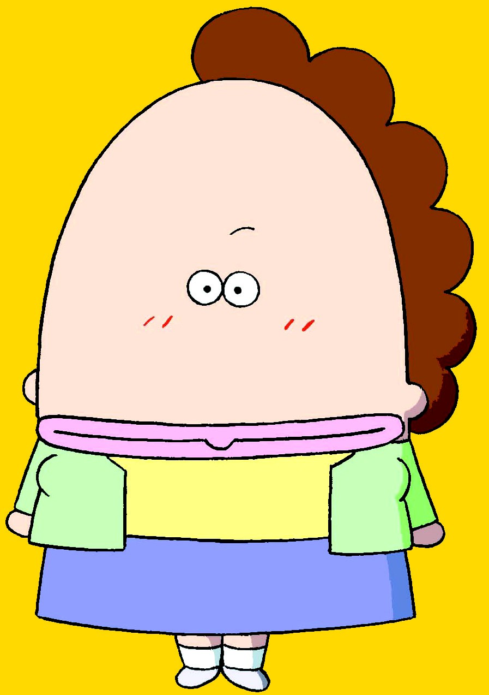
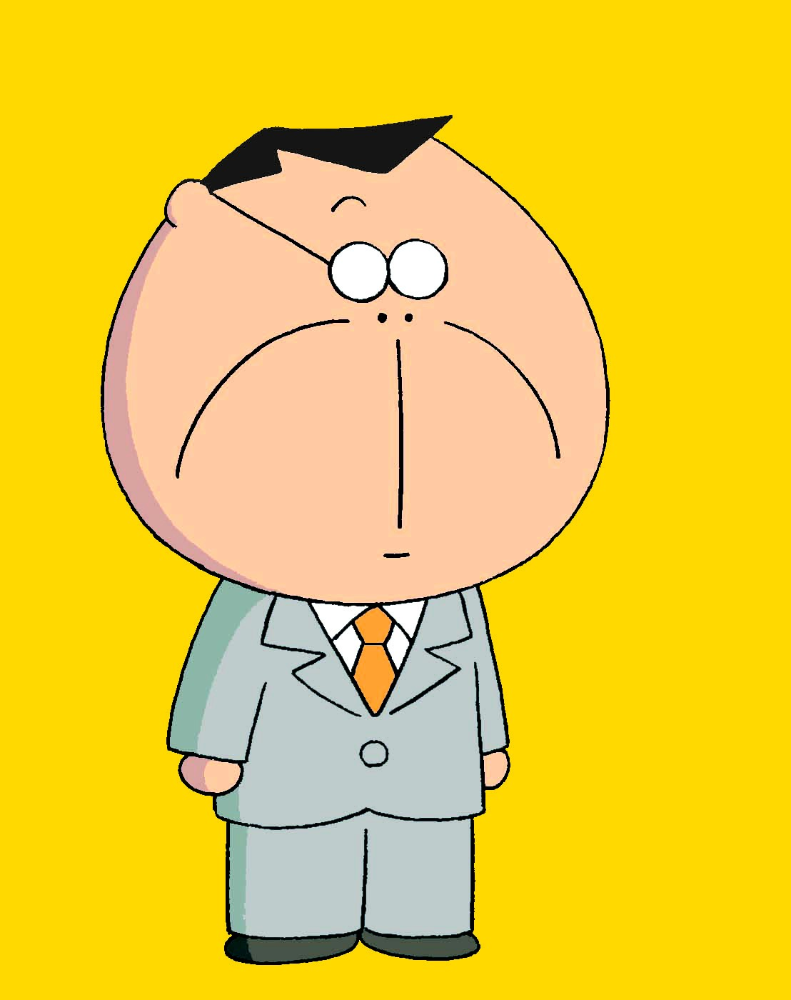
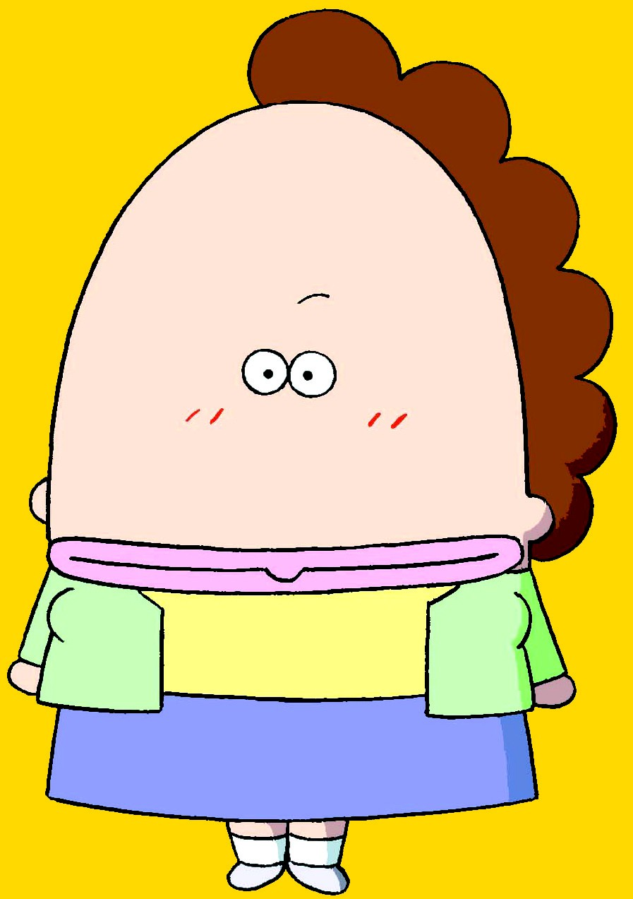
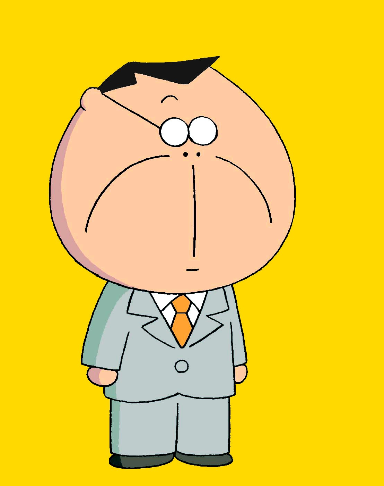

花媽
花媽是一位典型的家庭主婦，她很節省，認真完成每件事，是個容易滿足的人。
花爸
花爸向來我行我素、沈默寡言，行事作風有著大男人風格，但他是個重視親情且體貼的爸爸。
橘子
橘子單純活潑，雖然經常為了小事和媽媽鬥嘴，但會和媽媽分享心事，是個充滿夢想的高中生。
柚子

柚子個性害羞，有著成熟的思想與深奧的內心世界，是個純樸的國中生。
花媽花媽是一位典型的家庭主婦，她很節省，認真完成每件事，是個容易滿足的人。 |
花爸花爸向來我行我素、沈默寡言，行事作風有著大男人風格，但他是個重視親情且體貼的爸爸。 |
橘子橘子單純活潑，雖然經常為了小事和媽媽鬥嘴，但會和媽媽分享心事，是個充滿夢想的高中生。 |
柚子
柚子個性害羞，有著成熟的思想與深奧的內心世界，是個純樸的國中生。 |